| Imagem | ||||||
|---|---|---|---|---|---|---|
| Ancient Horror Card#27076 | 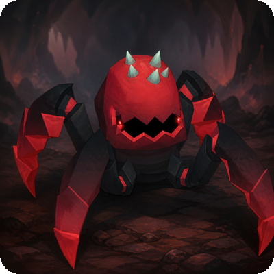 | Rare | Ancient Horror | Beast, Venom | Vida +180, Armadura +5, -8% dano recebido de Venom | Sem bônus de conjunto listado. |
| Anubian Deathmage Card#27077 | 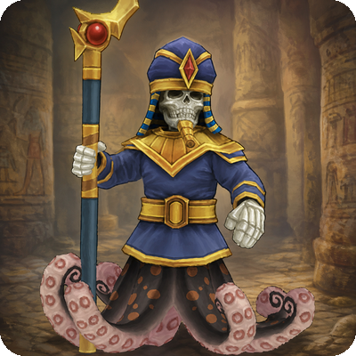 | Epic | Anubian Deathmage | Anubian, Spirit | Poder de Habilidade +20, +15% dano mágico contra Anubian, Aceleração de Habilidade +2% | AnubianAnubian
|
| Anubian Rider Card#27078 | 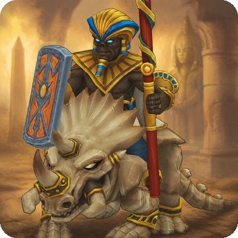 | Epic | Anubian Rider | Anubian, Beast | Velocidade de Movimento +6, Dano de Ataque +8, +10% dano contra Anubian | AnubianAnubian
|
| Anubian Serpent Card#27079 | 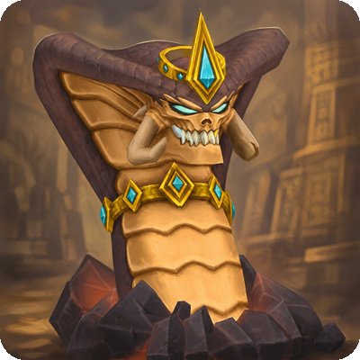 | Epic | Anubian Serpent | Anubian, Reptile | Poder de Habilidade +14, imunidade a Enraizamento, +8% dano contra Anubian | AnubianAnubian
|
| Ashmunrah Card#27080 |  | Legendary | Ashmunrah | Anubian | +7% a todo dano causado, ao matar: 2% de chance de invocar Demon Skeleton aliado (20s, max 5) | AnubianAnubian
|
| Banshee Card#27081 | 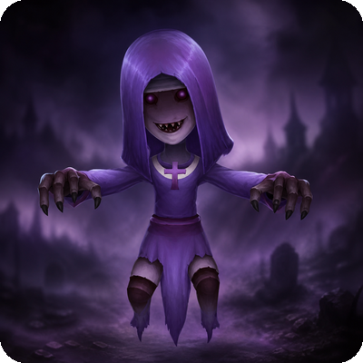 | Rare | Banshee | Spirit, Undead | Poder de Habilidade +10, 3% de chance de aplicar Medo ao acertar (1.5s) | Spirit, UndeadSpirit
Undead
|
| Bear Card#27082 | 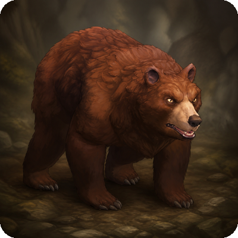 | Uncommon | Bear | Animal, Beast | Vida +120, Armadura +3 | BeastBeast
|
| Behemoth Card#27083 | 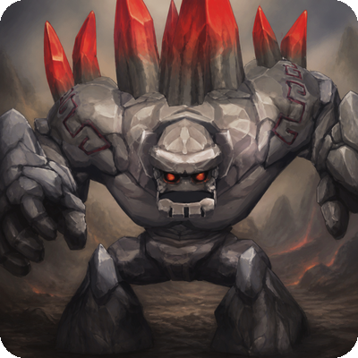 | Rare | Behemoth | Beast, Giant | Armadura +10, Vida +2%, -8% dano recebido de Giant | Sem bônus de conjunto listado. |
| Betrayed Wraith Card#27084 | 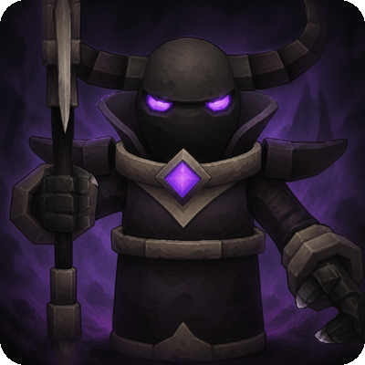 | Epic | Betrayed Wraith | Spirit, Undead | +10% dano contra Undead, Omnivamp +1%, Tenacidade +3% | Spirit, UndeadSpirit
Undead
|
| Big Goo Card#27085 | 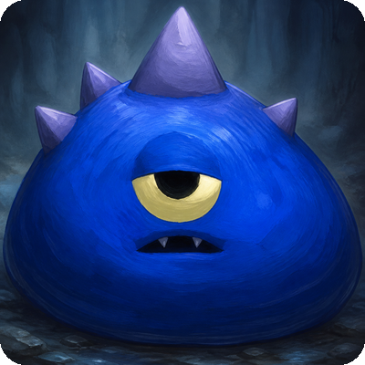 | Common | Big Goo | Beast | Vida +80, Armadura +3 | SlimeSlime
|
| Black Griffin Card#27086 | 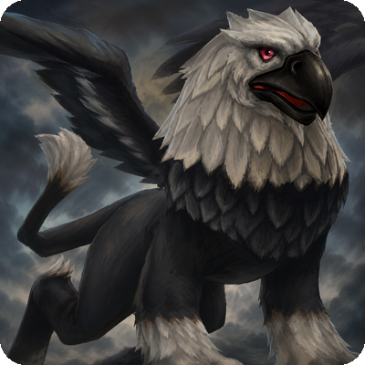 | Rare | Black Griffin | Animal, Beast | Velocidade de Movimento +10, imunidade a lentidão de terreno | Sem bônus de conjunto listado. |
| Black Knight Card#27087 | 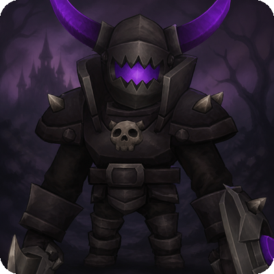 | Rare | Black Knight | Undead, Humanoid | Armadura +7, Resistência Mágica +5, Dano de Ataque +6 | HumanoidHumanoid
|
| Blightwalker Card#27088 | 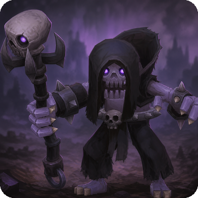 | Epic | Blightwalker | Undead, Void | Vida +250, -10% dano recebido de Undead, -10% dano de Morte recebido | UndeadUndead
|
| Blue Cultist Card#27089 | 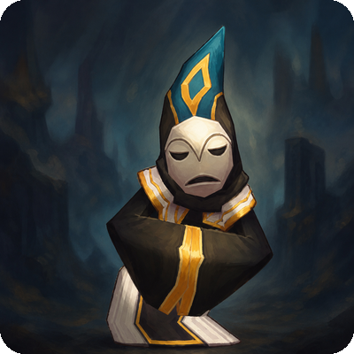 | Epic | Blue Cultist | Humanoid | Poder de Habilidade +7, +2% dano mágico contra Humanoid | HumanoidHumanoid
|
| Boarkin Card#27090 | 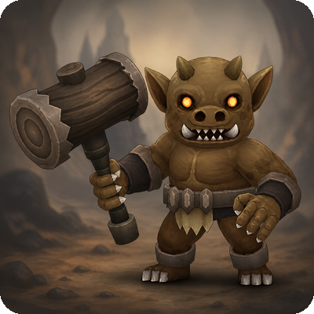 | Uncommon | Boarkin | Beast | Vida +90, Dano de Ataque +3, Armadura +3 | BeastBeast
|
| Bomb Card#27091 | 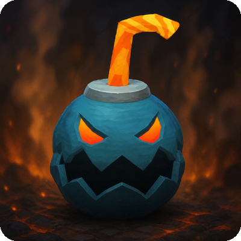 | Uncommon | Bomb | Emberborn | +8% dano quando Vida abaixo de 30% | Sem bônus de conjunto listado. |
| Borderdemon Card#27092 | 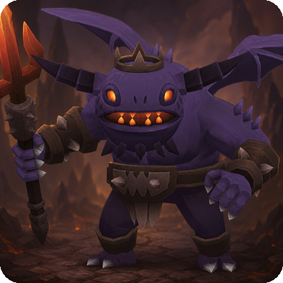 | Epic | Borderdemon | Demon | Poder de Habilidade +14, Aceleração de Habilidade +3%, +8% dano contra Demon | DemonDemon
|
| Bug Card#27093 | 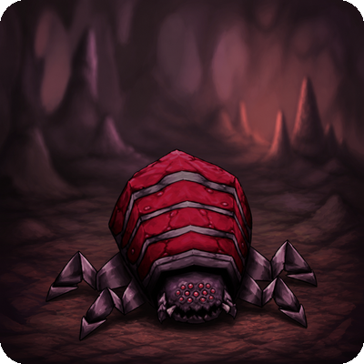 | Common | Bug | Crawlers | Velocidade de Movimento +2 | Sem bônus de conjunto listado. |
| Carrion Worm Card#27094 | 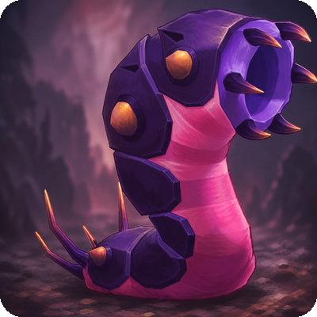 | Uncommon | Carrion Worm | Crawlers, Venom | Regeneração de Vida +3%, +5% dano contra Venom | Sem bônus de conjunto listado. |
| Cave Rat Card#27095 | 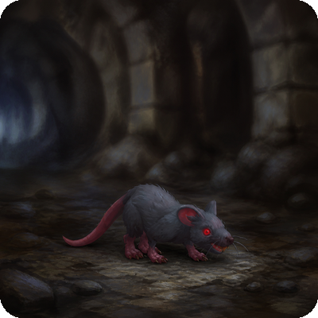 | Common | Cave Rat | Animal | Vida +50, Regeneração de Vida +2% | BeastBeast
|
| Cobra Card#27096 | 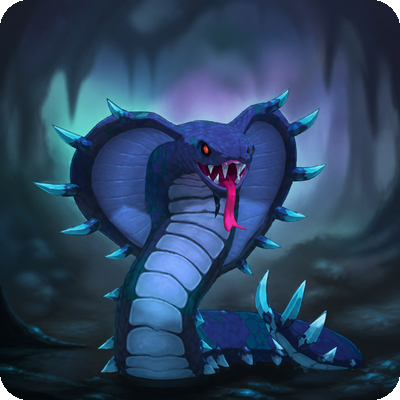 | Uncommon | Cobra | Reptile, Venom | Dano de Ataque +6, 5% de chance de aplicar Veneno ao acertar | Sem bônus de conjunto listado. |
| Crabeetle Card#27097 | 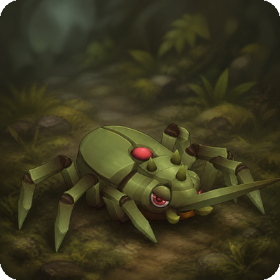 | Uncommon | Crabeetle | Crawlers | Armadura +3, Tenacidade +2% | Sem bônus de conjunto listado. |
| Crow Card#27098 | 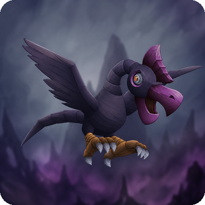 | Uncommon | Crow | Animal | Velocidade de Movimento +3, +5% experiência contra Animal | BeastBeast
|
| Crypt Shambler Card#27099 | 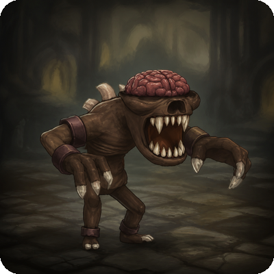 | Uncommon | Crypt Shambler | Undead | Vida +110, -8% dano recebido de Undead | UndeadUndead
|
| Cyclops Card#27100 | 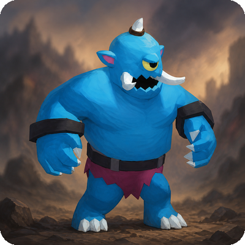 | Uncommon | Cyclops | Giant | Dano de Ataque +10, +8% dano contra Giant | GiantGiant
|
| Dark Torturer Card#27101 | 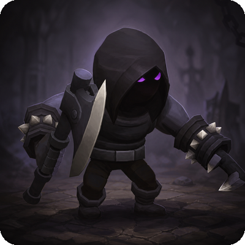 | Epic | Dark Torturer | Demon | Armadura +12, Resistência Mágica +8, -10% dano recebido de Demon, -3% Velocidade de Ataque | DemonDemon
|
| Defiler Card#27102 | 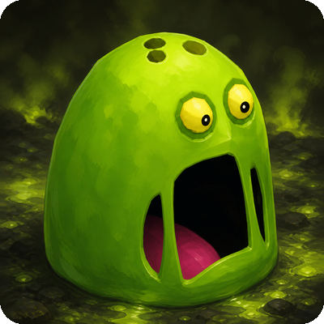 | Epic | Defiler | Demon, Void | Poder de Habilidade +14, +10% dano contra Void, Tenacidade +3% | DemonDemon
|
| Demon Card#27103 | 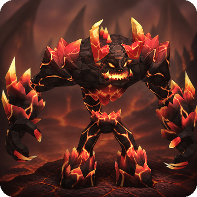 | Epic | Demon | Demon, Emberborn | Dano de Ataque +16, +15% dano contra Demon | DemonDemon
|
| Demonblast Card#27104 | 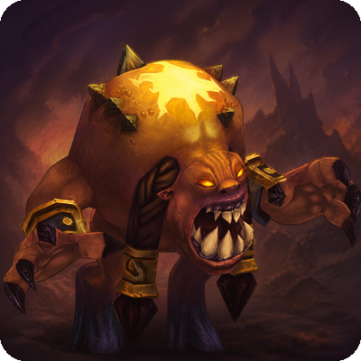 | Rare | Demonblast | Demon, Emberborn | +10% dano quando Vida abaixo de 30%, Chance de Crítico +5% | DemonDemon
|
| Demon Skeleton Card#27105 | 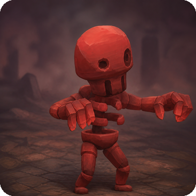 | Uncommon | Demon Skeleton | Undead, Demon | Armadura +5, -5% dano de Morte recebido | UndeadUndead
|
| Demongrunt Card#27106 | 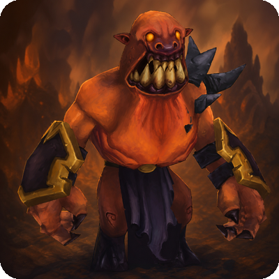 | Epic | Demongrunt | Demon | Dano de Ataque +8, Velocidade de Ataque +5%, +8% dano contra Demon | DemonDemon
|
| Destroyer Card#27107 | 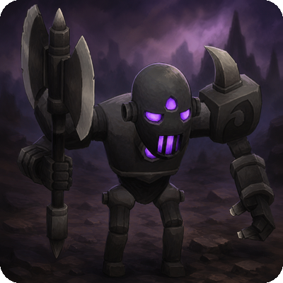 | Epic | Destroyer | Demon | Dano de Ataque +12, Penetração de Armadura +2%, Tenacidade +3% | DemonDemon
|
| Diabolic Imp Card#27108 | 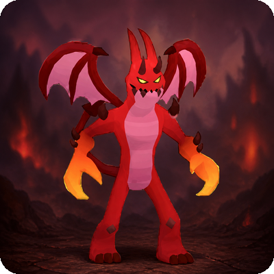 | Epic | Diabolic Imp | Demon, Emberborn | Velocidade de Movimento +6, +10% dano contra Demon | DemonDemon
|
| Dipthrah Card#27109 | 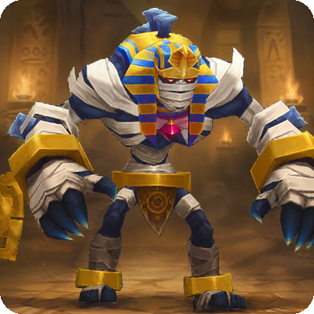 | Legendary | Dipthrah | Anubian, Spirit | Aceleração de Habilidade +8%, Mana +8%, habilidades custam 10% menos mana, -5% Vida máxima | AnubianAnubian
|
| Dragon Card#27110 | 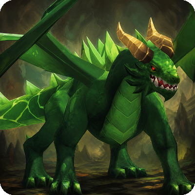 | Rare | Dragon | Dragon, Reptile | Dano de Ataque +10, +10% dano contra Dragon | DragonDragon
|
| Dragon Lord Card#27111 | 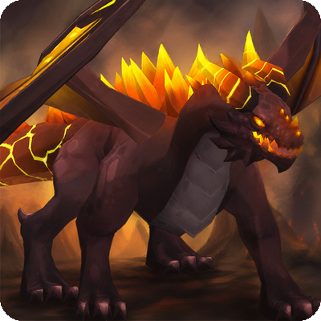 | Epic | Dragon Lord | Dragon, Reptile | Dano de Ataque +14, +12% dano contra Dragon, Penetração de Armadura +2% | DragonDragon
|
| Drillturtle Card#27112 | 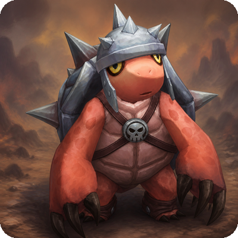 | Uncommon | Drillturtle | Reptile | Armadura +5, Tenacidade +3% | Sem bônus de conjunto listado. |
| Drillturtle Guard Card#27113 | 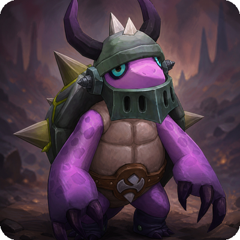 | Uncommon | Drillturtle Guard | Reptile | Armadura +7, -8% dano recebido de Reptile | Sem bônus de conjunto listado. |
| Droplet Slime Card#27114 | 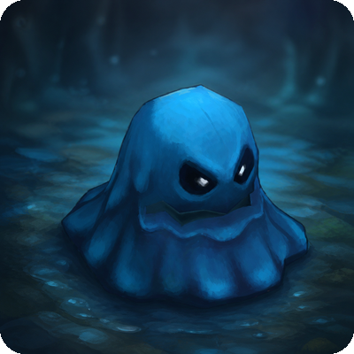 | Uncommon | Droplet Slime | Aquatic | Velocidade de Movimento +3, -5% dano de Água recebido | SlimeSlime
|
| Dunebacker Card#27115 | 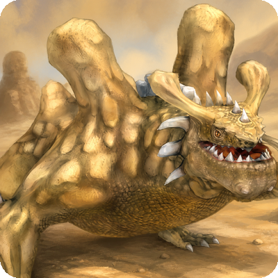 | Epic | Dunebacker | Dragon, Anubian | Dano de Ataque +14, ataques corpo a corpo têm 3% de chance de empurrar o alvo 2 casas | Anubian, DragonAnubian
Dragon
|
| Efreet Card#27116 | 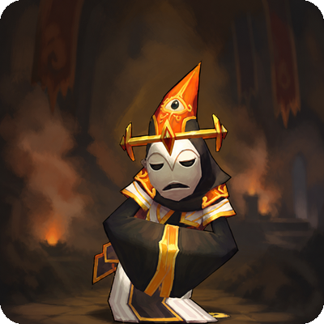 | Rare | Efreet | Demon, Emberborn | Poder de Habilidade +12, +10% dano de Fogo | Sem bônus de conjunto listado. |
| Elder Mageye Card#27117 | 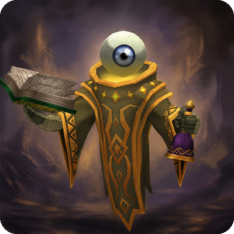 | Rare | Elder Mageye | Magical | Poder de Habilidade +10, +8% dano mágico contra Magical | Sem bônus de conjunto listado. |
| Ember Slime Card#27118 | 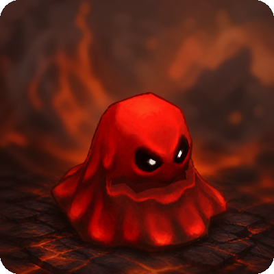 | Rare | Ember Slime | Emberborn | Armadura +6, -12% dano de Fogo recebido | SlimeSlime
|
| Evil Mage Card#27119 | 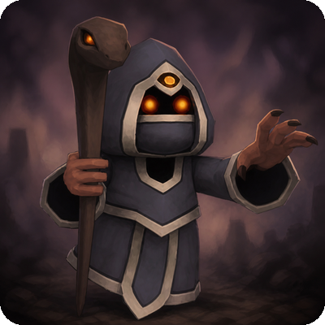 | Rare | Evil Mage | Humanoid | Poder de Habilidade +12, Penetração Mágica +2% | HumanoidHumanoid
|
| Evilwing Card#27120 | 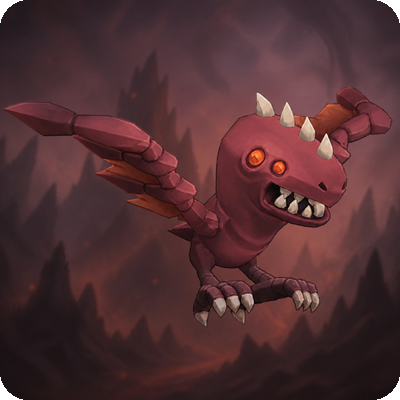 | Rare | Evilwing | Undead | Velocidade de Movimento +5, +8% experiência contra Undead | UndeadUndead
|
| Eyebat Card#27121 | 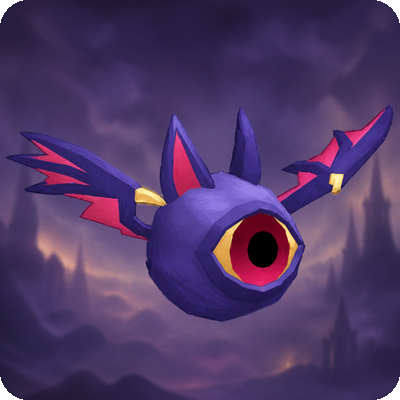 | Uncommon | Eyebat | Undead | Velocidade de Movimento +4, +5% experiência contra Undead | Sem bônus de conjunto listado. |
| Fairy Adept Card#27122 | Rare | Fairy Adept | Spirit, Magical | Poder de Habilidade +10, Aceleração de Habilidade +3%, Regeneração de Mana +3%, Poder de Cura e Escudo +3% | SpiritSpirit
| |
| Fairy Arcanist Card#27123 | Epic | Fairy Arcanist | Spirit, Magical | Poder de Habilidade +18, Aceleração de Habilidade +3%, Mana +3% | SpiritSpirit
| |
| Fairy Card#27124 | 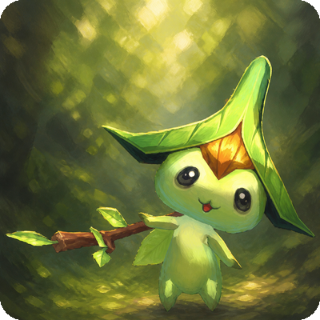 | Uncommon | Fairy | Spirit, Magical | Poder de Habilidade +7, Regeneração de Mana +3% | SpiritSpirit
|
| Fallen Imp Card#27125 | 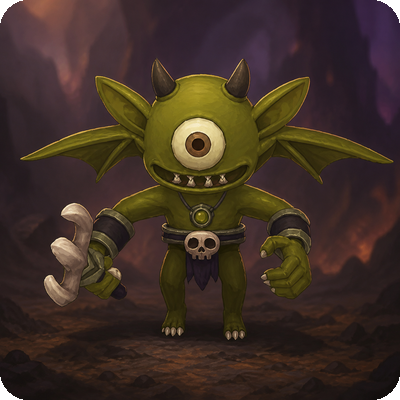 | Rare | Fallen Imp | Demon | Velocidade de Movimento +5, +8% experiência contra Demon | FallenFallen
|
| Fire Devil Card#27126 | 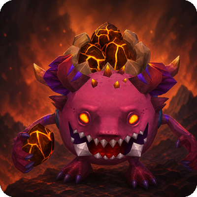 | Uncommon | Fire Devil | Demon, Emberborn | Poder de Habilidade +7, +5% dano de Fogo | DemonDemon
|
| Fire Elemental Card#27127 | 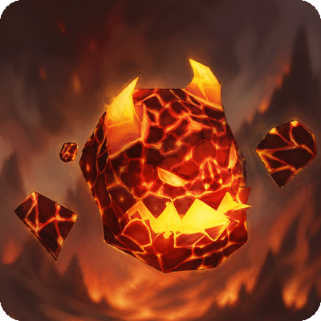 | Uncommon | Fire Elemental | Emberborn | Poder de Habilidade +7, +8% dano de Fogo | Sem bônus de conjunto listado. |
| Fire Kamberis Card#27128 | 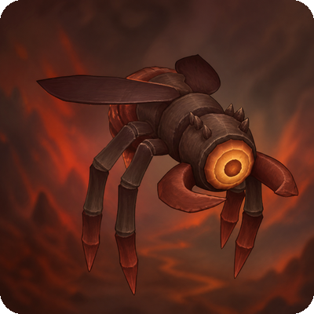 | Rare | Fire Kamberis | Emberborn | Poder de Habilidade +10, +8% dano de Fogo, Regeneração de Mana +2% | Sem bônus de conjunto listado. |
| Fish Mudskipper Card#27129 | Common | Fish Mudskipper | Aquatic | Velocidade de Movimento +2, +5% experiência contra Aquatic | Sem bônus de conjunto listado. | |
| Flare Slime Card#27130 | Rare | Flare Slime | Emberborn | +8% dano quando Vida abaixo de 50% | SlimeSlime
| |
| Frost Dragon Card#27131 | Epic | Frost Dragon | Dragon, Winterborn | -12% dano de Gelo recebido, 3% de chance de aplicar Lentidão ao acertar (3s) | DragonDragon
| |
| Frost Dragon Hatchling Card#27132 | Rare | Frost Dragon Hatchling | Dragon, Winterborn | Resistência Mágica +6, -12% dano recebido de Dragon | DragonDragon
| |
| Frost Goo Card#27133 | Common | Frost Goo | Winterborn | Vida +55, -5% dano de Gelo recebido | SlimeSlime
| |
| Fungusa Card#27134 | Rare | Fungusa | Plant, Venom | Vida +140, imunidade a Veneno | Sem bônus de conjunto listado. | |
| Fury Card#27135 | Epic | Fury | Demon, Emberborn | Velocidade de Ataque +7%, Dano de Ataque +8, Tenacidade +3% | DemonDemon
| |
| Gargoyle Card#27136 | Uncommon | Gargoyle | Construct | Resistência Mágica +7, -8% dano recebido de Construct | Sem bônus de conjunto listado. | |
| Gatorthar Card#27137 | Epic | Gatorthar | Dragon, Reptile | Penetração de Armadura +3%, +10% dano contra Dragon, +10% dano contra Reptile | Sem bônus de conjunto listado. | |
| Ghost Card#27138 | Common | Ghost | Spirit, Undead | Resistência Mágica +3, +5% dano contra Undead | Spirit, UndeadSpirit
Undead
| |
| Ghoul Card#27139 | Common | Ghoul | Undead | Regeneração de Vida +2%, Tenacidade +1% | UndeadUndead
| |
| Giant Cyclops Card#27140 | Rare | Giant Cyclops | Giant | Dano de Ataque +14, +12% dano contra Giant | GiantGiant
| |
| Giant Rat Card#27141 | Common | Giant Rat | Animal | Velocidade de Ataque +2%, +3% chance de drop extra de material | BeastBeast
| |
| Giant Spider Card#27142 | Rare | Giant Spider | Crawlers, Venom | Velocidade de Ataque +5%, Tenacidade +3%, 3% de chance de aplicar Lentidão ao acertar | Sem bônus de conjunto listado. | |
| Giant Treant Card#27143 | Rare | Giant Treant | Plant, Giant | Vida +200, Regeneração de Vida +5%, Armadura +5, Poder de Cura e Escudo +3% | Sem bônus de conjunto listado. | |
| Giant Turtle Card#27144 | Rare | Giant Turtle | Dragon, Aquatic | Armadura +12, -12% dano recebido de Dragon | Sem bônus de conjunto listado. | |
| Gluttondrake Card#27145 | Epic | Gluttondrake | Dragon, Void | Poder de Habilidade +14, ao matar: 20% de chance de restaurar 10% de Vida | DragonDragon
| |
| Goblin Archer Card#27146 | Common | Goblin Archer | Goblin | Velocidade de Movimento +3, +5% dano à distância | GoblinGoblin
| |
| Goblin Boomfuse Card#27147 | Legendary | Goblin Boomfuse | Goblin | +8% dano em área (de todos as fontes) | GoblinGoblin
| |
| Goblin Card#27148 | Common | Goblin | Goblin | Dano de Ataque +3, +5% dano contra Goblin | GoblinGoblin
| |
| Goblin Guard Card#27149 | Uncommon | Goblin Guard | Goblin | Armadura +5, -8% dano recebido de Goblin | GoblinGoblin
| |
| Goblin King Card#27150 | Rare | Goblin King | Goblin | Dano de Ataque +8, Poder de Habilidade +8, +10% dano contra Goblin | GoblinGoblin
| |
| Goblin Mage Card#27151 | Common | Goblin Mage | Goblin | Poder de Habilidade +3, +5% dano mágico contra Goblin | GoblinGoblin
| |
| Goblin Ogre Rider Card#27152 | Rare | Goblin Ogre Rider | Goblin, Giant | Dano de Ataque +8, Vida +110, +8% dano contra Goblin | GoblinGoblin
| |
| Goblin Soldier Card#27153 | Common | Goblin Soldier | Goblin | Armadura +3, Vida +60, -5% dano recebido de Goblin | GoblinGoblin
| |
| Goo Card#27154 | Common | Goo | Beast | Vida +55, Armadura +3 | SlimeSlime
| |
| Greater Borderdemon Card#27155 | Epic | Greater Borderdemon | Demon | Poder de Habilidade +18, Aceleração de Habilidade +3%, +12% dano mágico contra Demon | DemonDemon
| |
| Green Cultist Card#27156 | Uncommon | Green Cultist | Humanoid | Resistência Mágica +5, +5% resistência a Terra | HumanoidHumanoid
| |
| Griffin Card#27157 | Uncommon | Griffin | Animal, Beast | Velocidade de Movimento +5, +5% experiência geral | Sem bônus de conjunto listado. | |
| Grim Reaper Card#27158 | Epic | Grim Reaper | Spirit, Undead | +8% dano contra Undead, +8% dano contra Spirit, Roubo de Vida +1% | Spirit, UndeadSpirit
Undead
| |
| Guard of the Pharaoh Card#27159 | Epic | Guard of the Pharaoh | Anubian, Beast | Armadura +12, -15% dano recebido de Anubian | AnubianAnubian
| |
| Hellfire Mage Card#27160 |  | Epic | Hellfire Mage | Demon, Emberborn | Poder de Habilidade +18, +12% dano de Fogo | Sem bônus de conjunto listado. |
| Hellhound Pup Card#27161 | Uncommon | Hellhound Pup | Demon, Animal | Dano de Ataque +6, +5% dano de Fogo, Velocidade de Ataque +3% | Sem bônus de conjunto listado. | |
| Hermitcrab Card#27162 | Uncommon | Hermitcrab | Aquatic | Armadura +5, Resistência Mágica +3 | Sem bônus de conjunto listado. | |
| Hero Card#27163 | Rare | Hero | Humanoid | Dano de Ataque +10, 5% de chance de aplicar Feridas Dolorosas ao acertar (reduz cura em 40%, 3s) | HumanoidHumanoid
| |
| Horror Card#27164 | Uncommon | Horror | Spirit | Vida +90, Resistência Mágica +5 | Sem bônus de conjunto listado. | |
| Hunter Card#27165 | Uncommon | Hunter | Humanoid | Dano de Ataque +8, +8% dano à distância | HumanoidHumanoid
| |
| Hydra Card#27166 | Rare | Hydra | Dragon, Aquatic | Dano de Ataque +10, 2% de chance de reviver ao morrer | DragonDragon
| |
| Inferno Slime Card#27167 | Rare | Inferno Slime | Emberborn | Poder de Habilidade +10, +8% dano de Fogo | SlimeSlime
| |
| Juggernaut Card#27168 | Legendary | Juggernaut | Giant, Beast | Vida +8%, imunidade a Atordoamento e Empurrão, -8% Velocidade de Ataque | GiantGiant
| |
| Lesser Borderdemon Card#27169 | Rare | Lesser Borderdemon | Demon | Poder de Habilidade +10, Aceleração de Habilidade +2%, +5% dano contra Demon | DemonDemon
| |
| Lich Card#27170 | Uncommon | Lich | Spirit, Undead | Poder de Habilidade +9, +10% dano mágico contra Undead | Sem bônus de conjunto listado. | |
| Lost Soul Card#27171 | Uncommon | Lost Soul | Spirit, Undead | Ao matar: 20% de chance de restaurar 15% de Mana | SpiritSpirit
| |
| Lurker Card#27172 | Uncommon | Lurker | Venom, Crawlers | Velocidade de Movimento +3, Tenacidade +2% | Sem bônus de conjunto listado. | |
| Mad Fishman Card#27173 | Uncommon | Mad Fishman | Aquatic, Humanoid | Dano de Ataque +6, +6% dano quando Vida abaixo de 50% | HumanoidHumanoid
| |
| Mageye Card#27174 | Uncommon | Mageye | Magical | Poder de Habilidade +7, +5% dano mágico contra Magical | Sem bônus de conjunto listado. | |
| Mahrdis Card#27175 |  | Legendary | Mahrdis | Anubian, Undead, Emberborn | Regeneracao de Vida +10%, Dano de Ataque +5%, Poder de Habilidade +5% | AnubianAnubian
|
| Mammoth Card#27176 | Rare | Mammoth | Animal, Beast | Vida +220, Armadura +7, imunidade a empurrão | BeastBeast
| |
| Marid Card#27177 | Rare | Marid | Spirit, Aquatic | Regeneração de Mana +5%, Tenacidade +3% | Sem bônus de conjunto listado. | |
| Marksman of the Pharaoh Card#27178 | Epic | Marksman of the Pharaoh | Anubian | Dano de Ataque +16, +12% dano à distância, +10% dano contra Anubian | AnubianAnubian
| |
| Massive Slime Card#27179 |  | Rare | Massive Slime | Beast | Vida +260, -3% Velocidade de Movimento | SlimeSlime
|
| Mimic Card#27180 | Uncommon | Mimic | Magical | +5% ouro obtido, +3% chance de drop de itens | Sem bônus de conjunto listado. | |
| Minotaur Archer Card#27181 | Uncommon | Minotaur Archer | Beast | Chance de Crítico +3%, +5% dano à distância | HumanoidHumanoid
| |
| Minotaur Card#27182 | Uncommon | Minotaur | Beast | Dano de Ataque +8, +8% dano contra Beast | HumanoidHumanoid
| |
| Minotaur Guard Card#27183 | Uncommon | Minotaur Guard | Beast | Armadura +7, -10% dano recebido de Beast | HumanoidHumanoid
| |
| Minotaur Mage Card#27184 | Uncommon | Minotaur Mage | Beast | Poder de Habilidade +7, +5% dano mágico contra Beast | HumanoidHumanoid
| |
| Morguthis Card#27185 |  | Legendary | Morguthis | Anubian | Tenacidade +10%, imunidade a Silêncio, Dano de Ataque +10, -5% cura recebida | AnubianAnubian
|
| Mummy Card#27186 | Uncommon | Mummy | Undead | Tenacidade +3%, imunidade a Lentidão | UndeadUndead
| |
| Necromancer Card#27187 | Rare | Necromancer | Spirit, Undead | Poder de Habilidade +14, +10% dano mágico contra Spirit | SpiritSpirit
| |
| Nightmare Card#27188 | Rare | Nightmare | Spirit | Vida +130, Tenacidade +3%, imunidade a Sono | UndeadUndead
| |
| Night Evilwing Card#27189 | Rare | Night Evilwing | Undead | Velocidade de Movimento +5, +8% dano contra Undead, Velocidade de Ataque +3% | UndeadUndead
| |
| Omruc Card#27190 |  | Rare | Omruc | Beast | -10% dano recebido de Beast, -10% dano recebido de Animal | BeastBeast
|
| Orc Archer Card#27191 | Uncommon | Orc Archer | Humanoid | Dano de Ataque +6, +5% dano à distância | Humanoid, OrcHumanoid
Orc
| |
| Orc Berserker Card#27192 | Epic | Orc Berserker | Humanoid | Dano de Ataque +12, +5% dano contra Humanoid | Humanoid, OrcHumanoid
Orc
| |
| Orc Card#27193 | Epic | Orc | Humanoid | Dano de Ataque +6, +4% dano contra Humanoid | Humanoid, OrcHumanoid
Orc
| |
| Orc Leader Card#27194 | Epic | Orc Leader | Humanoid | Armadura +6, -6% dano recebido de Humanoid | Humanoid, OrcHumanoid
Orc
| |
| Orc Shaman Card#27195 | Rare | Orc Shaman | Humanoid | Poder de Cura e Escudo +5%, Regeneração de Mana +3% | Humanoid, OrcHumanoid
Orc
| |
| Orc Warlord Card#27196 | Legendary | Orc Warlord | Humanoid | Dano de Ataque +8, +6% dano contra Humanoid, Chance de Crítico +5% | Humanoid, OrcHumanoid
Orc
| |
| Orc Warrior Card#27197 | Epic | Orc Warrior | Humanoid | Armadura +5, -4% dano recebido de Humanoid | Humanoid, OrcHumanoid
Orc
| |
| Orshabaal Card#27198 | Legendary | Orshabaal | Demon, Void | +12% a todo dano causado, -8% Vida máxima | DemonDemon
| |
| Phantasm Card#27199 | Rare | Phantasm | Spirit | Poder de Habilidade +10, Resistência Mágica +5, imunidade a Silêncio | SpiritSpirit
| |
| Poison Kamberis Card#27200 | Rare | Poison Kamberis | Venom | Poder de Habilidade +10, +8% dano de Veneno e Terra | Sem bônus de conjunto listado. | |
| Poison Spider Card#27201 | Uncommon | Poison Spider | Crawlers, Venom | 5% de chance de aplicar Veneno ao acertar (3s), +5% dano contra Venom | Sem bônus de conjunto listado. | |
| Polar Bear Card#27202 | Rare | Polar Bear | Animal, Winterborn | Vida +180, Armadura +5, -8% dano de Gelo recebido | BeastBeast
| |
| Pterodactyl Card#27203 | Rare | Pterodactyl | Dragon, Animal | Velocidade de Movimento +6, +5% dano contra Dragon | Sem bônus de conjunto listado. | |
| Pyrelord Card#27204 | Epic | Pyrelord | Demon, Emberborn | Poder de Habilidade +18, +15% dano de Fogo, +5% dano de Gelo recebido | Sem bônus de conjunto listado. | |
| Rahemos Card#27205 |  | Legendary | Rahemos | Anubian, Spirit | Ao matar monstros poder 11+: +15% de chance de drop de carta | AnubianAnubian
|
| Rat Card#27206 | Common | Rat | Animal | Velocidade de Movimento +2, Tenacidade +1% | BeastBeast
| |
| Ratman Bowman Card#27207 | Uncommon | Ratman Bowman | Beast | Chance de Crítico +5%, +5% dano à distância | Sem bônus de conjunto listado. | |
| Ratman Bulwark Card#27208 | Uncommon | Ratman Bulwark | Beast | Armadura +7, Resistência Mágica +5, -5% dano recebido de Beast | Sem bônus de conjunto listado. | |
| Ratman Cutthroat Card#27209 | Uncommon | Ratman Cutthroat | Beast | Velocidade de Movimento +5, Chance de Crítico +3% | Sem bônus de conjunto listado. | |
| Ratman Ravager Card#27210 | Uncommon | Ratman Ravager | Beast | Velocidade de Movimento +4, Dano de Ataque +6, Velocidade de Ataque +3% | Sem bônus de conjunto listado. | |
| Razorwing Dragon Card#27211 | Epic | Razorwing Dragon | Dragon | Chance de Crítico +7%, +15% Dano Crítico contra Dragon | DragonDragon
| |
| Reaper Dreadwarden Card#27212 | Epic | Reaper Dreadwarden | Spirit | Tenacidade +4%, -10% dano recebido de Spirit, Dano de Ataque +8 | SpiritSpirit
| |
| Reaper Hexcaller Card#27213 | Epic | Reaper Hexcaller | Spirit | Omnivamp +1.5%, marca monstros atingidos impedindo revive | Sem bônus de conjunto listado. | |
| Reaper Soulpiercer Card#27214 | Epic | Reaper Soulpiercer | Spirit | Penetração de Armadura +3%, +10% dano contra Spirit | SpiritSpirit
| |
| Rotworm Card#27215 | Uncommon | Rotworm | Crawlers | Regeneração de Vida +3%, Vida +60 | Sem bônus de conjunto listado. | |
| Scorpion Card#27216 | Uncommon | Scorpion | Crawlers, Venom | Chance de Crítico +5%, +5% Dano Crítico | Sem bônus de conjunto listado. | |
| Skeleton Card#27217 | Uncommon | Skeleton | Undead | Armadura +5, -5% dano recebido de Undead | UndeadUndead
| |
| Slime Card#27218 | Common | Slime | Beast | Bônus de Poção +5% | SlimeSlime
| |
| Snake Card#27219 | Common | Snake | Reptile, Venom | Dano de Ataque +3, +3% dano contra Venom | Sem bônus de conjunto listado. | |
| Spook Card#27220 | Uncommon | Spook | Spirit, Undead | Poder de Habilidade +7, Resistência Mágica +3, +5% dano contra Undead | SpiritSpirit
| |
| Spore Card#27221 | Common | Spore | Plant | Bônus de Poção +5%, Regeneração de Vida +1% | Sem bônus de conjunto listado. | |
| Spectre Card#27222 | Rare | Spectre | Spirit, Undead | Poder de Habilidade +10, +8% dano contra Spirit, Tenacidade +2% | SpiritSpirit
| |
| Spider Card#27223 | Uncommon | Spider | Crawlers, Venom | Velocidade de Ataque +3%, Tenacidade +2% | Sem bônus de conjunto listado. | |
| Stalker Card#27224 | Rare | Stalker | Humanoid | Chance de Crítico +7%, +10% Dano Crítico | HumanoidHumanoid
| |
| Stone Golem Card#27225 | Rare | Stone Golem | Construct | Armadura +10, -10% dano recebido de Construct | Sem bônus de conjunto listado. | |
| Succubus Bladedancer Card#27226 | Epic | Succubus Bladedancer | Spirit, Magical | Velocidade de Movimento +8, Velocidade de Ataque +7%, Roubo de Vida +1% | Sem bônus de conjunto listado. | |
| Succubus Heartpiercer Card#27227 | Epic | Succubus Heartpiercer | Spirit, Magical | Roubo de Vida +2%, Omnivamp +1%, +8% dano contra Spirit | Sem bônus de conjunto listado. | |
| Succubus Spellweaver Card#27228 | Epic | Succubus Spellweaver | Spirit, Magical | Poder de Habilidade +20, Aceleração de Habilidade +3%, Omnivamp +1% | Sem bônus de conjunto listado. | |
| Swamp Goo Card#27229 | Rare | Swamp Goo | Plant, Venom | Poder de Habilidade +10, 30% de chance de Veneno em área ao ser atingido (cd: 5s) | SlimeSlime
| |
| Thalas Card#27230 |  | Legendary | Thalas | Anubian | +7% a todo dano causado, +3% chance de drop de carta, -3% ouro obtido | AnubianAnubian
|
| Thick Slime Card#27231 | Uncommon | Thick Slime | Beast | Vida +90, Tenacidade +2% | SlimeSlime
| |
| Toad Card#27232 | Common | Toad | Aquatic, Animal | Vida +65, -5% dano de Veneno recebido | BeastBeast
| |
| Tomb Roach Card#27233 | Uncommon | Tomb Roach | Undead, Crawlers | Regeneração de Vida +2%, +5% dano contra Undead | Sem bônus de conjunto listado. | |
| Treant Card#27234 | Uncommon | Treant | Plant | Vida +110, Regeneração de Vida +3% | Sem bônus de conjunto listado. | |
| Tsunami Slime Card#27235 | Rare | Tsunami Slime | Aquatic | Poder de Habilidade +12, +8% dano de Gelo, Resistência Mágica +5 | SlimeSlime
| |
| Undead Dragon Card#27236 | Epic | Undead Dragon | Dragon, Undead | Vida +5%, Roubo de Vida +1.5%, -10% dano de Morte recebido | Dragon, UndeadDragon
Undead
| |
| Undead Hermitcrab Card#27237 | Rare | Undead Hermitcrab | Undead, Aquatic | Armadura +8, -10% dano recebido de Undead | UndeadUndead
| |
| Unicorn Card#27238 | Rare | Unicorn | Magical, Animal | Velocidade de Movimento +8, Regeneração de Vida +3%, Poder de Cura e Escudo +3% | Sem bônus de conjunto listado. | |
| Vampire Card#27239 | Uncommon | Vampire | Undead | Roubo de Vida +1.5%, Chance de Crítico +3% | UndeadUndead
| |
| Vashresamun Card#27240 | Legendary | Vashresamun | Anubian, Reptile | Velocidade de Ataque +8%, Velocidade de Movimento +8, 3% de chance de aplicar Cegueira ao acertar (2s) | AnubianAnubian
| |
| Vicious Naga Card#27241 | Rare | Vicious Naga | Reptile, Aquatic | Resistência Mágica +8, -10% dano recebido de Reptile | Sem bônus de conjunto listado. | |
| Void Cyclops Card#27242 | Rare | Void Cyclops | Giant, Void | Poder de Habilidade +10, +10% dano contra Void, +5% dano contra Giant | GiantGiant
| |
| Void Kamberis Card#27243 | Rare | Void Kamberis | Void | Poder de Habilidade +12, +10% dano de Morte, Aceleração de Habilidade +2% | Sem bônus de conjunto listado. | |
| Void Rotworm Card#27244 | Rare | Void Rotworm | Crawlers, Void | Regeneração de Vida +5%, +5% dano contra Void | Sem bônus de conjunto listado. | |
| War Wolf Card#27245 | Rare | War Wolf | Animal, Beast | Velocidade de Movimento +6, +5% experiência contra Beast | BeastBeast
| |
| Warlock Card#27246 | Epic | Warlock | Spirit, Magical | Poder de Habilidade +20, +12% dano mágico contra Spirit | Sem bônus de conjunto listado. | |
| Wasp Card#27247 | Uncommon | Wasp | Crawlers | Velocidade de Movimento +3, Velocidade de Ataque +3% | Sem bônus de conjunto listado. | |
| Wave Slime Card#27248 | Rare | Wave Slime | Aquatic | Poder de Habilidade +10, +6% dano de Gelo | SlimeSlime
| |
| Weaken Pyrelord Card#27249 |  | Rare | Weaken Pyrelord | Demon, Emberborn | Poder de Habilidade +10, +8% dano de Fogo | Sem bônus de conjunto listado. |
| Wild Warrior Card#27250 | Uncommon | Wild Warrior | Humanoid | Dano de Ataque +8, Velocidade de Ataque +4% | HumanoidHumanoid
| |
| Winter Wolf Card#27251 | Rare | Winter Wolf | Animal, Winterborn | Velocidade de Movimento +6, -8% dano de Gelo recebido | BeastBeast
| |
| Witch Card#27252 | Rare | Witch | Humanoid, Magical | Poder de Habilidade +10, Aceleração de Habilidade +2% | HumanoidHumanoid
| |
| Wolf Card#27253 | Common | Wolf | Animal | Dano de Ataque +5, +5% dano contra Animal | BeastBeast
| |
| Family Black Sheep Card#29012 | Ultra | Black Sheep | Animal | Sozinho, causa 8% mais dano e recebe 6% menos dano de monstros. | Sem bônus de conjunto listado. | |
| Lord of Seven Lives Card#29013 | Ultra | Cat | Animal | Evita a morte e recupera 20% da Vida. Recarga: 24 horas. | Sem bônus de conjunto listado. | |
| Cluck of Courage Card#29014 | Ultra | Chicken | Animal | Com pouca Vida, recebe velocidade e um escudo por 6 segundos. | Sem bônus de conjunto listado. | |
| Good Boy Card#29015 | Ultra | Dog | Animal | Protege você e um aliado próximo com pouca Vida. Recarga: 30 segundos. | Sem bônus de conjunto listado. | |
| Legendary Wool Card#29016 | Ultra | Sheep | Animal | Reduz um golpe forte em até 8% da sua Vida máxima. Recarga: 18 segundos. | Sem bônus de conjunto listado. | |
| Little Forest Light Card#29017 | Ultra | Spore | Plant | A cada 5 abates, recupera Vida e Mana de aliados próximos. | Sem bônus de conjunto listado. | |
| Cheese Thief Card#29018 | Ultra | Rat | Animal | Recebe 12% mais gold e tem 5% de chance de duplicar o gold base. | BeastBeast
| |
| Iron Mandibles Card#29019 | Ultra | Crabeetle | Insect | O terceiro ataque no mesmo alvo causa 8% de dano adicional. | Sem bônus de conjunto listado. | |
| Feast of Souls Card#29020 | Ultra | Ghoul | Undead | Ao abater um monstro, recupera Vida e Mana. Recarga: 3 segundos. | UndeadUndead
| |
| Hunger of the Depths Card#29021 | Ultra | Rotworm | Vermin | Abaixo de 50% de Vida, recupera parte da Vida perdida a cada 5 segundos. | Sem bônus de conjunto listado. | |
| Bones of the Trade Card#29022 | Ultra | Skeleton | Undead | A cada 8 abates, invoca um Skeleton por 15 segundos. O nível acompanha o item equipado. | UndeadUndead
| |
| Divide and Conquer Card#29023 | Ultra | Slime | Slime | Ao cair abaixo de 25% de Vida, cria uma cópia sua por 5 segundos. Recarga: 5 minutos. | SlimeSlime
| |
| Dew Jeweler Card#29024 | Ultra | Spider | Insect | Recebe 8% mais itens e 3% mais cartas normais. | Sem bônus de conjunto listado. | |
| Horde Samurai Card#29025 | Ultra | Orc Warrior | Orc, Humanoid | Após uma pausa, seu próximo ataque causa 35% de dano adicional e concede um escudo. | Humanoid, OrcHumanoid
Orc
| |
| Abyss Astronomer Card#29026 | Ultra | Blue Cultist | Humanoid | Usar 3 magias diferentes fortalece a próxima magia e recupera Mana. | HumanoidHumanoid
| |
| Steam Fortress Card#29027 | Ultra | Drillturtle Guard | Reptile | Ficar parado por 2 segundos concede um escudo. Recarga: 8 segundos. | Sem bônus de conjunto listado. | |
| Ice Cream Dragon Card#29028 | Ultra | Frost Dragon Hatchling | Dragon, Reptile | A cada 4 abates, recebe cura, escudo ou velocidade. | DragonDragon
| |
| Scrap King Card#29029 | Ultra | Orc Leader | Orc, Humanoid | Após receber 5 golpes, ganha um escudo. Recarga: 20 segundos. | Humanoid, OrcHumanoid
Orc
| |
| Galaxy Devourer Card#29030 | Ultra | Void Rotworm | Void, Vermin | A cada 5 abates, fortalece seu próximo golpe contra um inimigo poderoso. | Sem bônus de conjunto listado. | |
| Black Veil Bride Card#29031 | Ultra | Banshee | Undead, Spirit | Devolve 15% do dano recebido do primeiro agressor após 6 segundos. | Spirit, UndeadSpirit
Undead
| |
| Walking Cathedral Card#29032 | Ultra | Giant Spider | Insect, Venom | Ser atacado por 3 inimigos concede um escudo e reduz a velocidade deles. | Sem bônus de conjunto listado. | |
| Bronze Bull Card#29033 | Ultra | Minotaur Guard | Minotaur, Humanoid | Mover-se 4 vezes na mesma direção fortalece o próximo ataque e concede um escudo. | HumanoidHumanoid
| |
| Count of the Crimson Ball Card#29034 | Ultra | Vampire | Undead | Atacar após se mover causa dano adicional e recupera Vida. | UndeadUndead
| |
| Abyss Pharaoh Card#29035 | Ultra | Anubian Deathmage | Anubian | A cada 3 abates, fortalece sua próxima magia com dano de Morte. | AnubianAnubian
| |
| Forge Emperor Card#29036 | Ultra | Dragon Lord | Dragon, Reptile | Causar dano carrega um golpe de Fogo que também concede um escudo. | DragonDragon
| |
| Prismatic Nightmare Card#29037 | Ultra | Nightmare | Spirit | Recebe Tenacidade. O primeiro controle sofrido concede velocidade e dano. | UndeadUndead
| |
| Pot Lid Knight Card#29038 | Ultra | Ratman Bulwark | Vermin, Humanoid | O primeiro ataque distante é reduzido e parte do dano volta ao agressor. | Sem bônus de conjunto listado. | |
| Plague Doctor Card#29039 | Ultra | Ratman Ravager | Vermin, Humanoid | Causa mais dano a inimigos envenenados e se cura ao abatê-los. | Sem bônus de conjunto listado. | |
| Beautiful Witch Card#29040 | Ultra | Witch | Humanoid, Magical | Recebe Tenacidade. O primeiro controle sofrido desacelera o agressor. | HumanoidHumanoid
| |
| Eclipse Knight Card#29041 | Ultra | Black Knight | Undead, Humanoid | Alterna entre causar 10% mais dano e recuperar 10% do dano recebido. | HumanoidHumanoid
| |
| Hell Inspector Card#29042 | Ultra | Borderdemon | Demon | Após 6 segundos, devolve parte do dano do agressor e recebe um escudo. | DemonDemon
| |
| Black Sun Archer Card#29043 | Ultra | Marksman of the Pharaoh | Anubian | Ataques distantes causam mais dano. O terceiro também atinge outro inimigo. | AnubianAnubian
| |
| Stained Glass Dancer Card#29044 | Ultra | Succubus Bladedancer | Spirit, Magical | Mover-se cria fragmentos. Com 3, o próximo ataque atinge inimigos próximos e cura você. | Sem bônus de conjunto listado. | |
| Spook Splinter Card#29045 | Ultra | Spook | Spirit, Magical | Uma lasca espectral se destaca de você: voa até quem você atacar para causar dano extra, ou até quem você curar ou escudar para reforçá-lo. | SpiritSpirit
| |
| Fire Whelp Card#29059 | Uncommon | Fire Whelp | Dragon, Emberborn | -8% dano de Fogo recebido, Resistência Mágica +4, Vida +45 | Sem bônus de conjunto listado. | |
| Dragonkin Card#29060 | Rare | Dragonkin | Dragon, Humanoid | Dano de Ataque +8, Velocidade de Movimento +4, -6% dano recebido de Dragon | Sem bônus de conjunto listado. | |
| Mossling Card#29061 | Uncommon | Mossling | Plant, Spirit | Poder de Cura e Escudo +3%, +3% de cura e escudo recebidos | Sem bônus de conjunto listado. | |
| Night Reaper Card#29062 | Rare | Night Reaper | Undead, Spirit | Omnivamp +1%, +7% de dano em área, Dano de Ataque +4 | Sem bônus de conjunto listado. | |
| Blood Priest Card#29063 | Rare | Blood Priest | Undead, Humanoid | Poder de Habilidade +9, Omnivamp +1%, Penetração Mágica +3 | Sem bônus de conjunto listado. | |
| Hellfork Imp Card#29064 | Rare | Hellfork Imp | Demon | Chance de Crítico +4%, Velocidade de Ataque +5%, Velocidade de Movimento +2 | Sem bônus de conjunto listado. | |
| Demon Soldier Card#29065 | Rare | Demon Soldier | Demon | Tenacidade +5%, Armadura +7, imunidade a Empurrão | Sem bônus de conjunto listado. | |
| Cyclops Seer Card#29066 | Rare | Cyclops Seer | Giant, Humanoid | Poder de Habilidade +4%, Aceleração de Habilidade +3, Resistência Mágica +3 | GiantGiant
| |
| Steam Cyclops Card#29067 | Rare | Steam Cyclops | Giant, Construct | Vida +3%, Armadura +6, Regeneração de Vida fora de combate +10 | GiantGiant
| |
| Fallen Zealot Card#29068 | Uncommon | Fallen Zealot | Demon | Velocidade de Movimento +4, ao matar: +12% de Velocidade de Ataque por 4s | FallenFallen
| |
| Fallen Demon Card#29069 | Rare | Fallen Demon | Demon | Dano de Ataque +7, Vida +3%, Tenacidade +2% | FallenFallen
| |
| Dread Eye Card#29070 | Rare | Dread Eye | Demon, Spirit | Imunidade a Confusão, Resistência Mágica +5, Velocidade de Movimento +5 | Sem bônus de conjunto listado. | |
| Abyss Reaver Card#29071 | Rare | Abyss Reaver | Demon | Letalidade +8, Dano de Ataque +5, ao matar: +15% de Velocidade de Movimento por 3s | Sem bônus de conjunto listado. | |
| Cult Executioner Card#29072 | Rare | Cult Executioner | Humanoid | Dano de Ataque +5, Tenacidade +3%, +12% de dano contra monstros com menos de 30% de Vida | Sem bônus de conjunto listado. | |
| Cursed Captain Card#29073 | Legendary | Cursed Captain | Undead, Humanoid | Dano de Ataque +12, +5% dano em área, ao matar: 12% de explosão 3x3 (15% da Vida do monstro), -8% ouro | Cursed CrewCursed Crew
| |
| Cursed Boatswain Card#29074 | Epic | Cursed Boatswain | Undead, Humanoid | Dano de Ataque +11, Roubo de Vida +1%, golpes corpo a corpo têm 5% de chance de puxar o alvo 2 casas | Cursed CrewCursed Crew
| |
| Cursed Deckhand Card#29075 | Epic | Cursed Deckhand | Undead, Humanoid | Dano de Ataque +10, Chance de Crítico +3%, ataque à distância: 8% de ricochete (50% do dano) | Cursed CrewCursed Crew
| |
| Demon Lord Card#29076 | Legendary | Demon Lord | Demon, Emberborn | Poder de Habilidade +20, Aceleração de Habilidade +4, magias: 8% de meteoro 3x3 (60% do dano), -5% Vida | Sem bônus de conjunto listado. | |
| Hellgate Warden Card#29077 | Legendary | Hellgate Warden | Demon, Construct | Armadura +14, Resistência Mágica +8, devolve 15% do dano corpo a corpo, -7 Velocidade de Movimento | Sem bônus de conjunto listado. | |
| Cliff Raptor Card#29078 | Rare | Cliff Raptor | Reptile, Beast | Dano de Ataque +6, Velocidade de Movimento +4, golpes corpo a corpo causam sangramento (3s) | Sem bônus de conjunto listado. | |
| Hawk Knight Card#29079 | Rare | Hawk Knight | Humanoid, Beast | -12% dano de Energia recebido, Armadura +6, Velocidade de Movimento +5 | Sem bônus de conjunto listado. | |
| Storm Pterodactyl Card#29080 | Epic | Storm Pterodactyl | Dragon, Animal | Velocidade de Ataque +5%, Velocidade de Movimento +5, Dano de Ataque +3, à distância: 5% de empurrar | Sem bônus de conjunto listado. | |
| Sanctum Apprentice Card#29081 | Epic | Sanctum Apprentice | Humanoid | Aceleração de Runas +14, Poder de Habilidade +8 | Sem bônus de conjunto listado. | |
| Lava Scorpion Card#29082 | Rare | Lava Scorpion | Emberborn, Crawlers | Armadura +8, imunidade a Queimadura, Vida +30 | Sem bônus de conjunto listado. | |
| Ice Elemental Card#29083 | Epic | Ice Elemental | Winterborn, Construct | Imunidade a Enraizamento, -12% dano de Gelo recebido, Armadura +7, Vida +50 | Sem bônus de conjunto listado. | |
| Winterbound Guardian Card#29084 | Epic | Winterbound Guardian | Undead, Winterborn | Armadura +9, Resistência Mágica +5, abaixo de 50% de Vida: escudo de 8% por 4s | WinterboundWinterbound
| |
| Winterbound Archer Card#29085 | Rare | Winterbound Archer | Undead, Winterborn | Dano de Ataque +6, Velocidade de Ataque +2%, ataques à distância deixam o alvo 15% mais lento por 1.5s | WinterboundWinterbound
| |
| Winterbound Mage Card#29086 | Epic | Winterbound Mage | Undead, Winterborn | Poder de Habilidade +12, Aceleração de Habilidade +4, Velocidade de Movimento +3 | WinterboundWinterbound
| |
| Mawfiend Card#29087 | Rare | Mawfiend | Void, Beast | Vida +2%, Armadura +5, ao matar: recupera 3% da Vida máxima | Sem bônus de conjunto listado. |